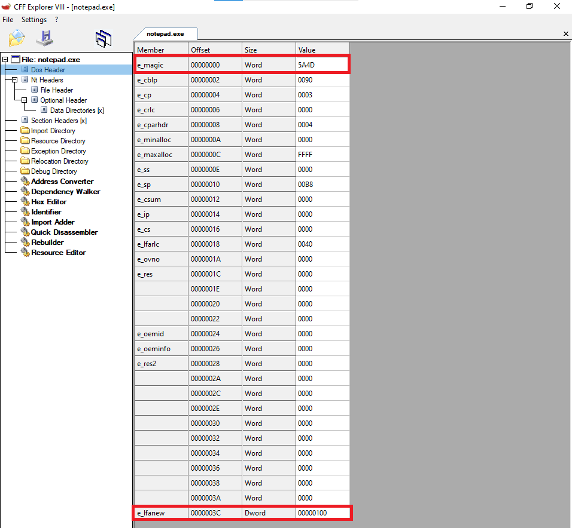
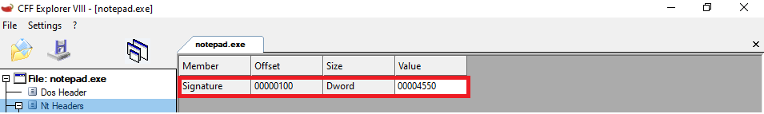
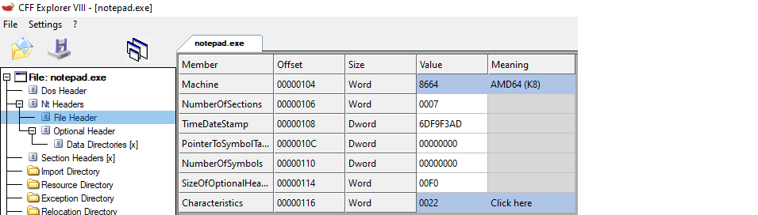
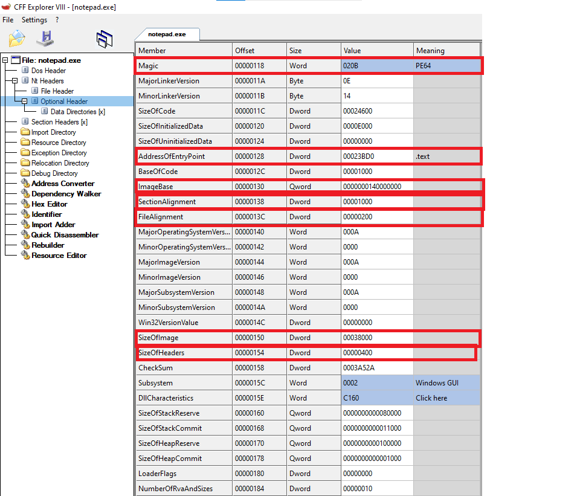
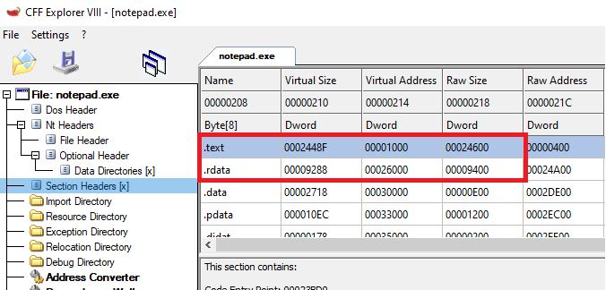
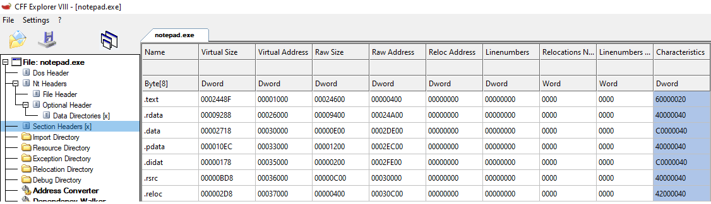

Hi, this is my first blog and today we will talk about PE format. PE (PORTABLE EXECUTABLE) is a file format that provides information about a file for the WindowsKernal. Then WindowsKernal will use that information to load the file on the RAM, the information include: size of the code, offset of each sections, Entry point of the program, ...

First part of the PE format is DOS HEADER. Its main purpose is to act as a standard identifier. Containing the "MZ" signature that marks the file as an executable. The most important field is e_lfanew, which is the offset to the NT header. It also serves the purpose of backward compatibility with the old DOS file format (when the program is loaded in MS-DOS, the default error message is "This program cannot be run in DOS mode.").
The second part is NT_HEADER. NT_HEADER got three smaller section (signature, File header, optional header).

SIGNATURE: The role of this section is to confirm that the format behind it is a valid PE format

FileHeader:

OptionalHeader

Purpose: Data Directories tell the Windows loader where and how large key PE structures are, instead of storing those structures directly in the headers.
Common Data Directories:
We'll be using Data Directories a lot in the futures. I'll dig deep in some importants DataDirectories.
IMAGE_DIRECTORY_ENTRY_IMPORT: This is where all the information about DLLs, Functions is located. Each entry_import is a dll. Inside entry_import there are thunks which is the functions information.
PIMAGE_DOS_HEADER dos = (PIMAGE_DOS_HEADER)base;
PIMAGE_NT_HEADERS nt = (PIMAGE_NT_HEADERS)((BYTE*)base + dos->e_lfanew);
IMAGE_DATA_DIRECTORY import_dir = nt->OptionalHeader.DataDirectory[IMAGE_DIRECTORY_ENTRY_IMPORT];
PIMAGE_IMPORT_DESCRIPTOR entry_import = (PIMAGE_IMPORT_DESCRIPTOR)((BYTE*)base + import_dir.VirtualAddress); //each entry_import[] is a dll
This is how you get to entry_import.
The fields this struct contains:
pub original_first_thunk: RVA,
pub time_date_stamp: u32,
pub forwarder_chain: u32,
pub name: RVA,
pub first_thunk: RVA,
We need to focus on original_first_thunk and the first_thunk field.
PIMAGE_THUNK_DATA original_thunk = (PIMAGE_THUNK_DATA)((BYTE*)base + entry_import->OriginalFirstThunk);
PIMAGE_THUNK_DATA first_thunk = (PIMAGE_THUNK_DATA)((BYTE*)base + entry_import->FirstThunk);This is how you get to the thunk.
Each thunk represent a function. Here's the fields inside the struct.
typedef struct _IMAGE_THUNK_DATA {
union {
uint32_t* Function; // address of imported function
uint32_t Ordinal; // ordinal value of function
PIMAGE_IMPORT_BY_NAME AddressOfData; // RVA of imported name
DWORD ForwarderStringl // RVA to forwarder string
} u1;
} IMAGE_THUNK_DATA, *PIMAGE_THUNK_DATA;
The last part is SectionHeader. It contains a lot of detailed information about the file.
-> Thats all for today see you in the next Blog.